| Stage | Answers the question | Challenge items it serves |
|---|---|---|
| 1 Foundation | What do we have on FelCloud and what must exist first? | All (prerequisite) |
| 2 Sandbox runtime | VM, Kubernetes or Docker per team? | Provisioning (15), stress test (15) |
| 3 Team networking | How does a team get its own IP and many apps without port juggling? | Provisioning, IPAM (10), isolation (5) |
| 4 HA gateways | How do we route subdomains with no single point of failure? | HA gateways (15) |
| 5 Reload / rollback | How do we change routes without downtime or broken configs? | Zero-downtime reload & rollback (10) |
| 6 Provisioning | What exactly happens when a team registers? | Provisioning, stress test |
| 7 Teardown / IPAM | How do we release and reuse IPs safely? | IPAM (10), teardown & lifecycle security (10) |
| 8 Security | What stops a team from attacking others or the platform? | Isolation & safeguards (5), security docs |
| 9 Control plane | What drives and observes all of this? | Admin dashboard (10) |
FelCloud hosts high-density hackathons. Today they rely on static subnets and manually edited reverse proxies. When many teams deploy at once, or a proxy config breaks, the result is downtime and IP conflicts.
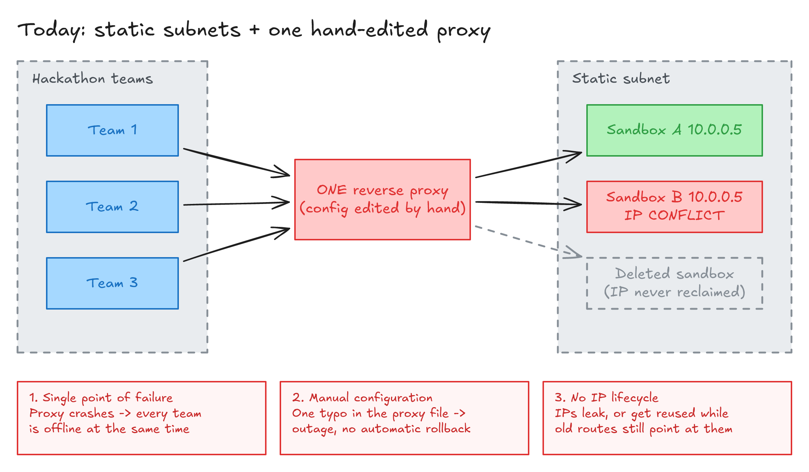
| Root cause | Symptom | What the challenge requires |
|---|---|---|
| Single gateway | Gateway crash = every team offline | Dual redundant HA gateways with instant failover (Phase 1, 15 pts) |
| Manual configuration | A typo takes the proxy down; no way back | Hot reload + syntax validation + sub-second auto-rollback (Phase 1, 10 pts) |
| No IP lifecycle | IPs leak, conflict, or get reused while still routed | Automated IPAM with short leases and immediate release (Phase 1, 10 pts); safe teardown (Phase 2, 10 pts) |
On top of these, the system must auto-provision isolated sandboxes via an API (15 pts), survive 10+ simultaneous registrations (15 pts), block inter-sandbox traffic and protect the management layer (5 pts), and offer an admin dashboard (10 pts).
Purpose: know exactly what FelCloud gives us, and create the few base resources everything else sits on.
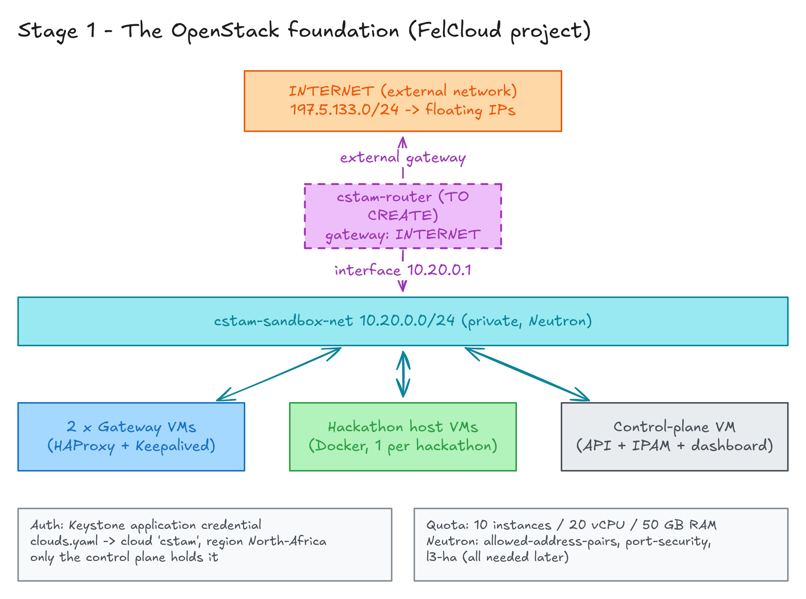
openstack CLI)container-infra) nor Zun (container) is in the catalog, so containers run on our own VMs.cstam-sandbox-net = 10.20.0.0/24; external network INTERNET = 197.5.133.0/24.allowed-address-pairs, port-security, l3-ha.sbx-f0699704, adam) and count against it.~/.config/openstack/clouds.yaml as cloud cstam.cstam-sandbox-net is not connected to any router today (the existing private_router has no
external gateway and serves another subnet). A floating IP cannot work without one, so step 1 of the build is:
openstack router create cstam-router --external-gateway INTERNET openstack router add subnet cstam-router cstam-sandbox-subnet
Gateways, hackathon hosts and the control plane all live on cstam-sandbox-net. Isolation is not done by
splitting networks but by security groups on every port (Stage 8). This keeps routing simple: the gateway can reach
any team IP directly, and one subnet gives us ~250 addresses to manage in our IPAM.
Purpose: choose the runtime that gives each team an isolated place to deploy, fast, within our quota.
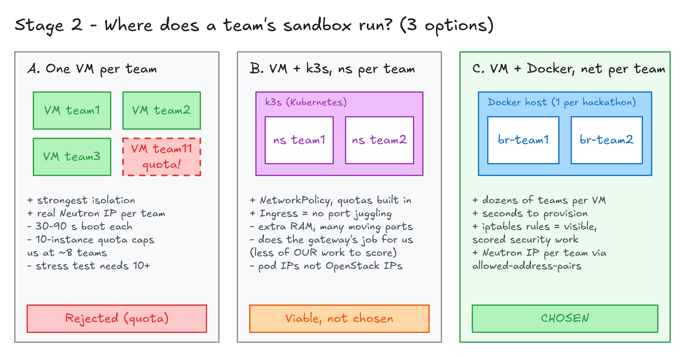
| A. One VM per team | B. VM + k3s, namespace per team | C. VM + Docker, network per team | |
|---|---|---|---|
| Isolation | Strongest (own kernel) | Namespaces + NetworkPolicy | Bridge per team + iptables + hardening |
| Time to provision | 30–90 s (boot from volume) | Seconds | Seconds |
| Fits quota (10 VMs) | No: ~8 teams max, stress test needs 10+ | Yes | Yes: dozens of teams per VM |
| Per-team OpenStack IP | Native | Pod IPs are not Neutron IPs; needs MetalLB tricks | Neutron IP per team via allowed-address-pairs (Stage 3) |
| Our own scored work visible? | Yes | Less: Ingress/NetworkPolicy do the gateway and isolation work for us | Yes: iptables rules and NAT are explicitly scored items |
| Complexity / RAM overhead | Low / high per team | Medium / +0.5–1 GB per host | Low / minimal |
| Verdict | Not chosen (quota); revisit only if FelCloud raises the quota | Viable, not chosen | Chosen |
DOCKER-USER and INPUT iptables chains block the metadata service, the host and the management IPs,
and container hardening plus per-team cgroup slices handle resource abuse. k3s would add declarative policies, but it also
adds RAM, moving parts in a live demo, and it hides exactly the gateway and isolation work the judges score.
G0.basic.4c8g, roughly 10–15 small team apps). A host VM is a
failure domain for its own hackathon only; the platform-wide high availability requirement is about the gateways
(Stage 4), which we make fully redundant.
Purpose: give every team a real, OpenStack-managed private IP and let them run as many containers as they want, without routing by port numbers.
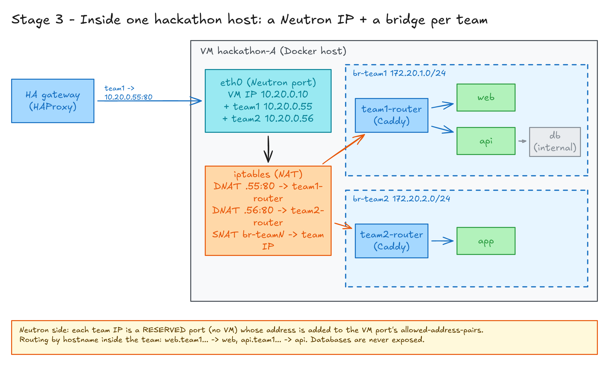
10.20.0.55). This is how the IP becomes "managed by OpenStack".allowed-address-pairs. Without this,
Neutron's anti-spoofing drops traffic for an IP that does not belong to the port.ip addr add 10.20.0.55/24 dev eth0.br-team1 (e.g. 172.20.1.0/24), plus a
router container (Caddy) attached only to that bridge.DNAT 10.20.0.55:80 → team1-router. Outbound: SNAT br-team1 → 10.20.0.55,
so all traffic leaving the team carries the team's own IP (useful for logs, rate limiting and audit).web.team1… → web:3000,
api.team1… → api:8000. Databases and caches stay internal on the bridge.| Approach | Gateway routes to | Port bookkeeping | OpenStack IP per team |
|---|---|---|---|
| Docker published ports | VM:8081, VM:8082… | Messy; ports get recycled too | No |
| Per-VM Traefik + Docker DNS | VM:80, then container name | None | No |
| Literally bridging the Neutron IP into the team network (macvlan) | Each container IP | None | Yes, but needs an allowed pair per container; fragile |
| Neutron IP per team + NAT + team router (chosen) | team-IP:80 | None | Yes |
Purpose: route every subdomain to the right team IP, through one public IP, with no single point of failure.
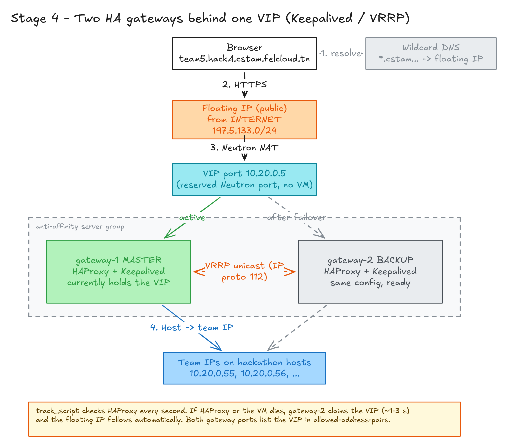
team5.hackA.cstam.felcloud.tn; a single wildcard DNS record points all of *.cstam… to the floating IP.10.20.0.5, a reserved port owned by no VM.Host header in its map file and forwards to the team IP, e.g. 10.20.0.55:80.| HAProxy | Nginx (OSS) | Traefik | Envoy | |
|---|---|---|---|---|
| Config validation | haproxy -c | nginx -t | No real test step; bad config is silently ignored | Via control plane |
| Change routes without reload | Runtime API + maps | Only in paid Plus | File/HTTP provider | xDS |
| Demonstrable rollback | Explicit | Explicit | Hard to show | Complex |
| Per-team rate limiting (bonus) | Stick-tables, very strong | limit_req | Middleware | Yes |
| Verdict | Chosen | Good fallback | Not chosen | Overkill |
| Keepalived (VRRP) | Octavia (FelCloud LBaaS) | DNS round-robin | |
|---|---|---|---|
| Failover time | ~1–3 s (sub-second possible) | Seconds to tens of seconds | Minutes (caching) |
| Our own work, demo-able crash | Yes: kill gateway-1 live | Black box | No |
| TLS termination | In HAProxy | Needs Barbican, which FelCloud does not offer | — |
| Verdict | Chosen | Not chosen | Rejected |
openstack port create --network cstam-sandbox-net vip-port.allowed-address-pairs.track_script checks HAProxy every second: if HAProxy dies, the VIP moves even though the VM is alive.Purpose: change routing while traffic flows, and make it impossible for a bad config to stay live.
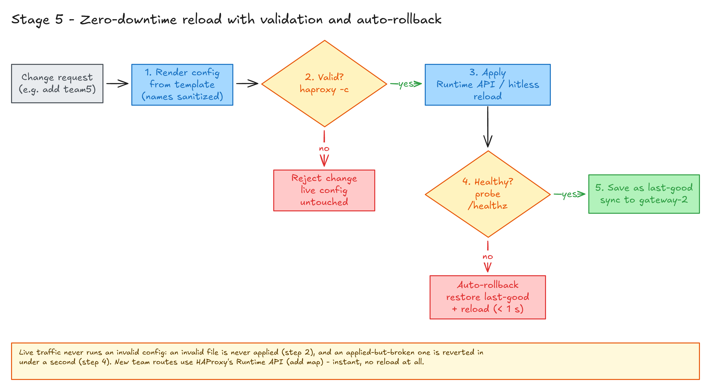
[a-z0-9-], so a name can never inject config.haproxy -c -f new.cfg. Invalid → rejected; the live config is never touched.add map / del map), which is instant
and needs no reload. Structural changes use HAProxy's hitless reload (master-worker mode keeps listening sockets)./healthz and a known route. Failure → restore the last-good config and reload (< 1 s).Purpose: one API call turns a team registration into a reachable, isolated sandbox, in seconds.
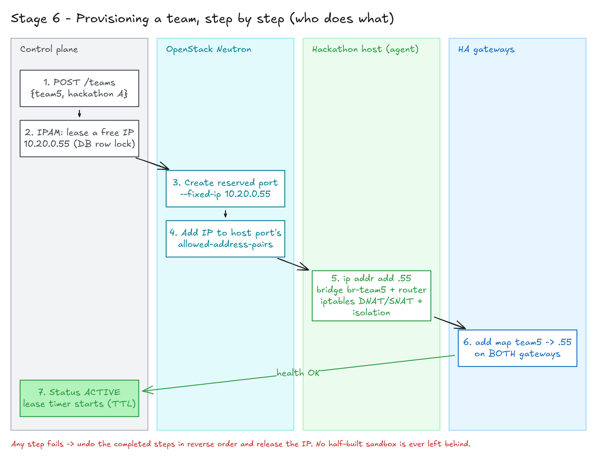
POST /teams arrives at the control-plane API.br-teamN, start the team router, install NAT and isolation rules.Purpose: free resources immediately when a sandbox expires, without ever sending a team's traffic to another team.
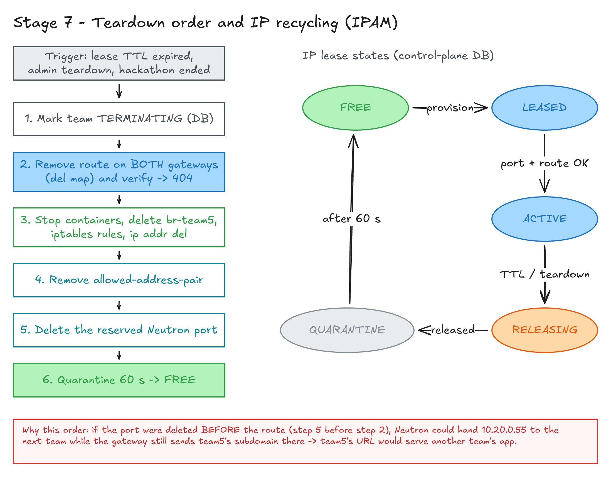
| Resource | What happens on its own | Consequence |
|---|---|---|
| Gateway route | Nothing: HAProxy knows nothing about OpenStack | The route keeps pointing at the old IP |
| Neutron IP | Freed immediately when its port is deleted; can be handed to the next port at once | Next team may get the same IP while the old route still exists |
| Pre-created port | Deleting a VM only detaches a port we created ourselves | The IP leaks unless we delete the port explicitly |
| DNS | Wildcard record: nothing to delete | Gateway must answer 404 for unknown subdomains |
10.20.0.55 to the next team while the gateway still
sends team5… there. Team 5's URL would then serve another team's app. The rule: an IP may only return to the
pool once nothing points at it, and a short quarantine (60 s) absorbs in-flight connections and caches.
FREE → LEASED → ACTIVE → RELEASING → QUARANTINE → FREE.--fixed-ip ip-address=…) so quarantined IPs are never reused early.Purpose: make sure a team can only reach its own sandbox, and nobody can reach the platform's management layer.
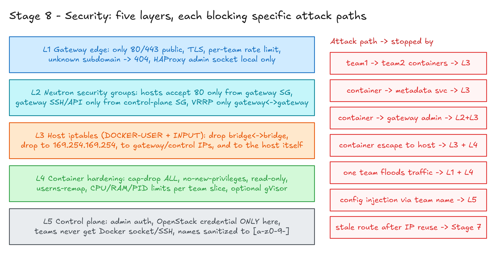
| Challenge requirement | Covered by |
|---|---|
| Block inter-sandbox traffic | L3: separate bridges (Docker isolation chains) + DOCKER-USER drop rules; L2: hosts accept traffic only from the gateway security group |
| Protect the gateway management layer from sandboxes | L2: gateway SSH/Runtime API only from the control-plane security group; L3: drop sandbox traffic to gateway, control-plane and metadata IPs; L1: HAProxy admin socket bound locally |
| Lifecycle security (sanitize IP allocations) | Stage 7 order + quarantine; reconciler removes orphans |
| Isolated sandboxes | L4: cap-drop ALL, no-new-privileges, read-only root, user-namespace remapping, CPU/RAM/PID limits per team slice, optional gVisor |
| Config integrity | L5: names sanitized; Stage 5 validation and rollback |
sbx-f0699704 security group is described as "HTTP from gateways" but has no ingress rules at all.
Our security groups will be created with explicit rules referencing the gateway group (remote_group_id).
Purpose: one place that decides, executes, remembers and shows everything.
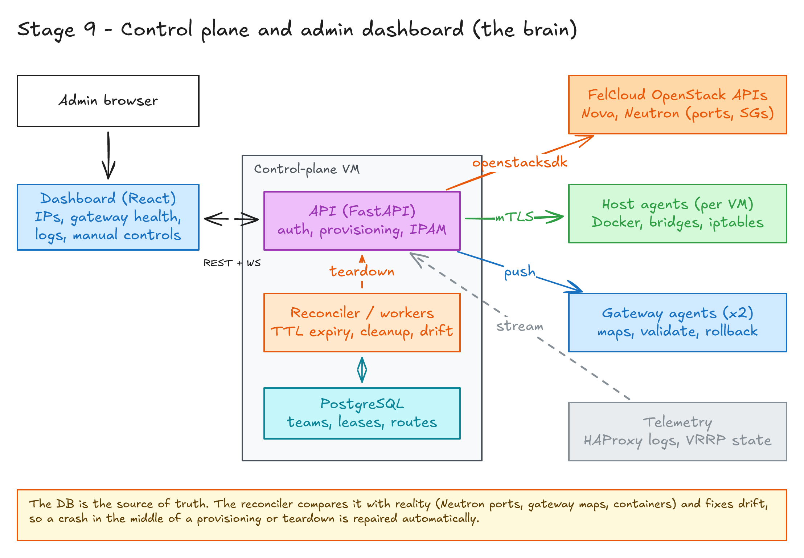
| Component | Role |
|---|---|
| API (FastAPI) | Auth, team and hackathon CRUD, IPAM, orchestration of Stages 5–7 |
| PostgreSQL | Source of truth: teams, leases, IP states, routes, config versions (for rollback) |
| Reconciler / workers | Lease expiry, teardown pipeline, drift repair (orphan ports, stale routes, dead containers) |
| Host agent (per hackathon VM) | Docker networks, router containers, iptables, IP binding; reached over mTLS |
| Gateway agent (x2) | Map updates, validation, reload, rollback; reports health and VRRP state |
| Dashboard (React) | Active sandboxes and their OpenStack IPs, gateway health (master/backup), subdomain map, live traffic logs, and buttons for spin-up, teardown, manual failover and manual rollback |
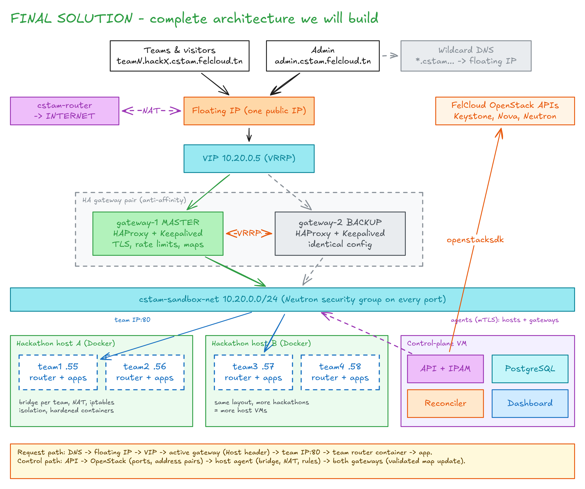
A visitor opens a team app. DNS (wildcard) → floating IP → VIP on gateway-1 → HAProxy maps
team1.hackA… to 10.20.0.55:80 → host A DNATs to the team1 router → router picks the app by hostname.
A team registers. API → IPAM lease → Neutron reserved port + allowed pair → host agent builds the bridge, router, NAT and rules → both gateways get a validated map entry → ACTIVE in seconds.
Gateway-1 crashes. Keepalived on gateway-2 stops receiving VRRP adverts → claims the VIP within ~1–3 s → the floating IP follows the VIP → gateway-2 already has identical maps → traffic continues.
A sandbox expires. Reconciler → route removed on both gateways → containers, bridge, rules removed → allowed pair removed → port deleted → IP quarantined, then FREE.
| Challenge item | Points | Where in the design |
|---|---|---|
| Automated OpenStack sandbox provisioning | 15 | Stages 2, 3, 6 |
| Dual redundant HA gateways | 15 | Stage 4 |
| Automated IPAM & reclamation | 10 | Stages 3, 7 |
| Zero-downtime reload & auto-rollback | 10 | Stage 5 |
| Concurrent provisioning stress test (10+) | 15 | Stage 6 (DB-locked IPAM, no VM boot per team) |
| Automated teardown & lifecycle security | 10 | Stage 7, reconciler |
| Network isolation & access safeguards | 5 | Stage 8 |
| Admin dashboard | 10 | Stage 9 |
| Bonus: TLS / rate limiting / maintenance page | +2 each | HAProxy (wildcard certificate, stick-tables, errorfile/backup server) |
| Bonus: OpenStack-native orchestration | +2 | Optional: Heat templates for the gateway pair and host VMs |
| VM | Flavor | Count | vCPU | RAM |
|---|---|---|---|---|
| Gateways | G0.basic.1c2g | 2 | 2 | 4 GB |
| Control plane | G0.basic.2c4g | 1 | 2 | 4 GB |
| Hackathon hosts | G0.basic.4c8g | 2 | 8 | 16 GB |
| Already existing (sbx, adam) | 1c1g, shared 4c4g | 2 | 5 | 5 GB |
| Total vs quota | 7 / 10 | 17 / 20 | 29 / 50 GB |
A third hackathon host fits if the stopped adam VM is deleted (it still counts against the quota while SHUTOFF).
IP:80.| Risk | Why it matters | Test |
|---|---|---|
| Floating IP on an unbound VIP port | FelCloud runs OVN (we saw a network:distributed port); floating IPs on ports owned by no VM must work for the VIP design | Create router, VIP port, floating IP; move the VIP between two test VMs |
| VRRP between gateways | Needs IP protocol 112 allowed and unicast peers | Two small VMs with Keepalived; kill one, measure failover time |
| Allowed-address-pairs on host ports | The whole per-team IP design depends on it | Add a secondary IP to a VM, reach it from another VM |
*.cstam.felcloud.tn, and API access for a Let's Encrypt DNS-01 challenge (wildcard TLS bonus)?sbx-f0699704, and is there an existing CSTAM tool we should build on?